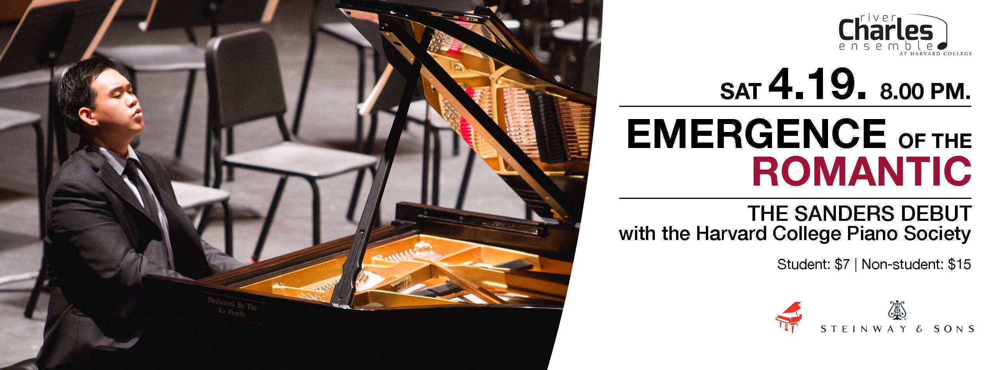
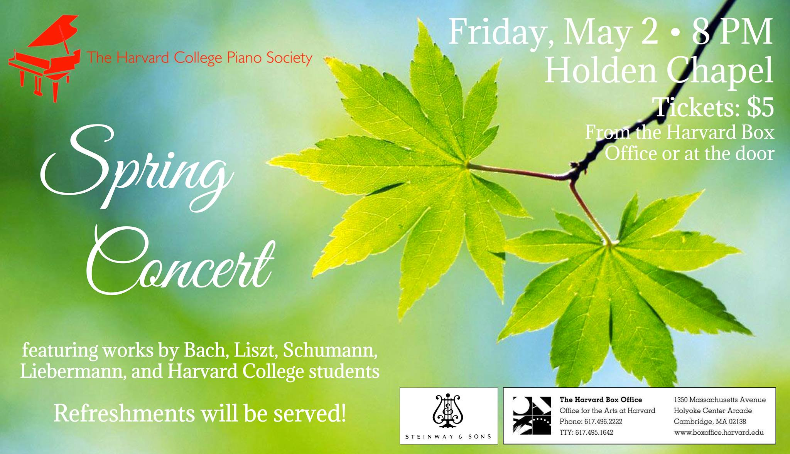
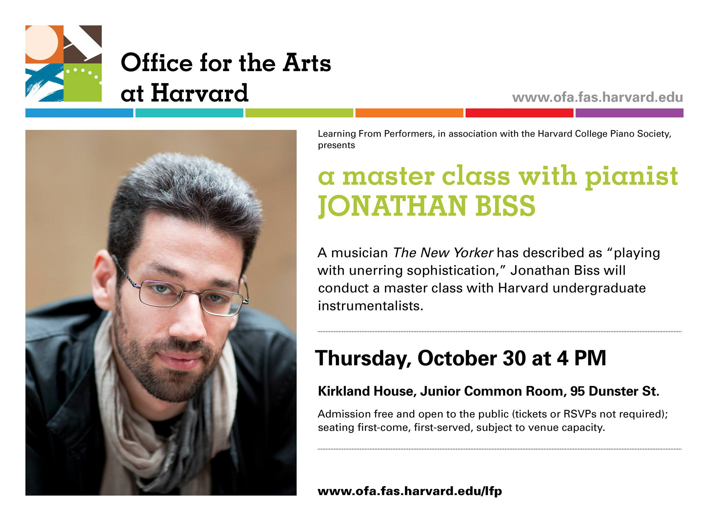
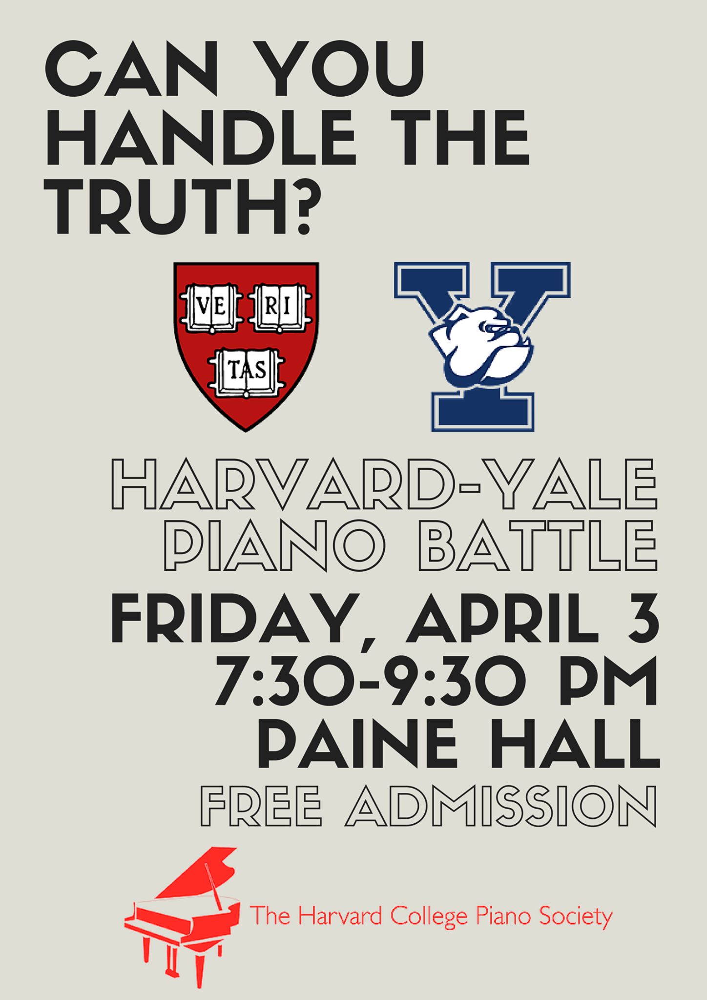

Yuja Wang: Music and Style - The Harvard Crimson
Harvard Pianists Give Street Piano Lessons - The Harvard Crimson
Two Schools, Two Pianos - The Daily Free Press
Harvard Piano Society Looks Beyond Campus - The Harvard Crimson